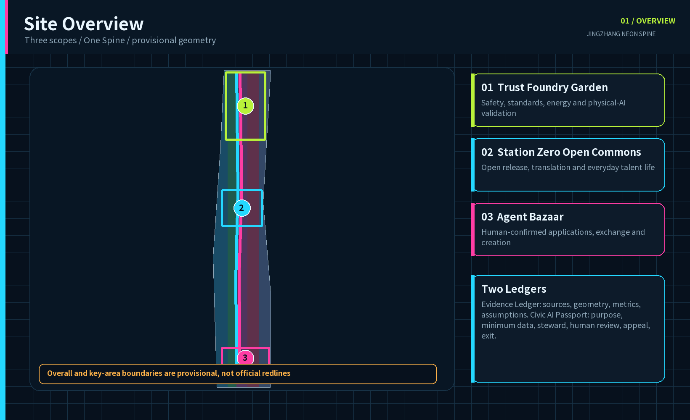
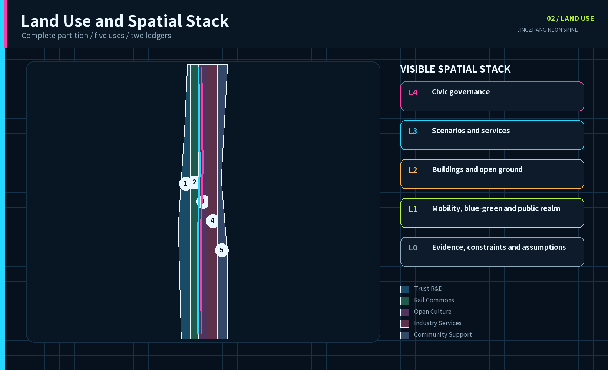
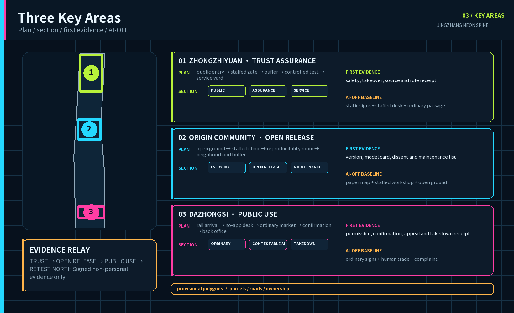
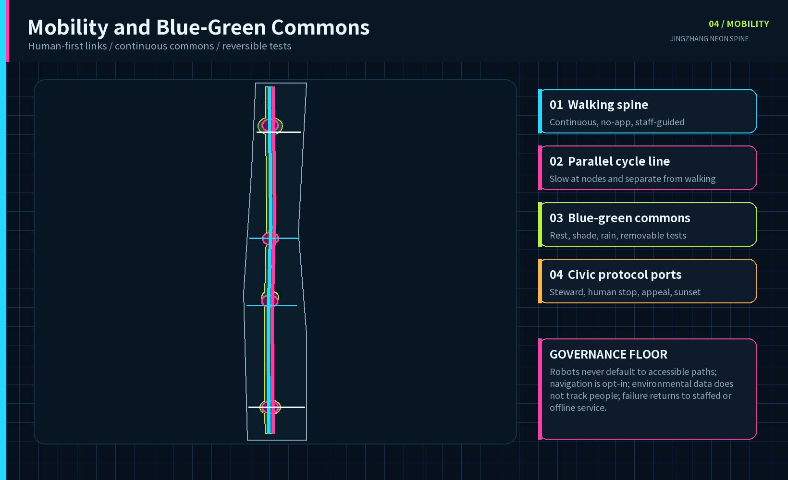
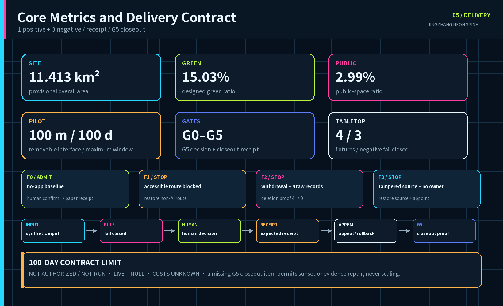

JINGZHANG NEON SPINE: A Visible, Contestable and Reversible Civic AI Belt
Transform the century-old Jing-Zhang railway heritage into a civic protocol that makes each AI system's purpose, data, steward, human checkpoint and exit rule visible in public space. All spatial work is conceptual and based on provisional geometry.
JINGZHANG NEON SPINE
Visible, contestable and reversible. Trust is forged in the north, open innovation grows at the origin, and applications meet everyday life in the south.
Design Basis and Source List
This proposal takes the official open-call notice, the agent taskbook and the repository site package as its task basis. The official text defines coordinated research, overall design and three key-area requirements, while the public package does not include official site or key-area polygons, regulatory controls, road redlines, ownership, utilities, heritage constraints or a verified building survey. The package therefore preserves the repository provisional geometry with medium confidence, official_boundary=false and provisional_constraint. Its current EPSG:4548 area is about 11.413 square kilometres and supports reproducible design comparison only, never a statutory redline, approval or cadastral claim.来源
This iteration compresses the vision into one delivery contract that can refuse to start: the Protocol Beacon 100 m / First 100 Days Civic AI Acceptance Segment at Zhongzhiyuan. One hundred metres is a conceptual target for a removable interface and 100 days is a maximum trial window. Exact location, roles and resources must pass G0-G2; a staffed public gate remains blocked until 4/4 fixtures match and 3/3 negative fixtures fail closed. Its current operational_status is not_authorized_not_run, not an approved or live pilot.指标 指标 来源
The evidence chain has five layers: the registry limits source use; GeoJSON stores spatial claims; metrics.json recalculates quantities; assumptions.json exposes gaps; and self_check.json records the four review gates. When official polygons arrive, the whole chain, including land use, mobility, blue-green space, buildings, phasing, metrics and graphics, must be regenerated rather than merely replacing one area value.来源 空间数据
The visible-claim register has five rows: provisional scope returns to site_boundary.geojson; spatial ratios return to metrics and geometry; 100 m/100 days return to delivery-contract.json and are labelled proposer-set limits; tabletop results return to synthetic evidence; all six cost totals remain unknown. A row without authority, limitation and replay path cannot enter the next gate.来源
The official-public authority ledger uses three disciplines: what a source verifies, what it cannot verify, and what new evidence triggers. Completing a search does not make controls available, and a numeric value for an adjacent parcel is never portable by default.
| Official public reference | What it verifies here | What it cannot prove and the trigger |
|---|---|---|
| Jing-Zhang corridor HD00-1601 and related street-level control-plan consultation response | Confirms the plan title, 2022-2035 horizon, consultation period and responses on selected road junctions | Its body provides no applicable polygon, FAR, height schedule, density, setback, ownership or utility capacity; adopted sheets trigger whole-package recalculation by the planning lead at G0 来源 |
| Lanjinglijia implementation-scheme consultation response | Shows that height, daylight, land use, ownership, facilities and traffic require parcel-specific publication and review | The 60 m, 36 m, land-use and 700 sqm facility records belong only to named HD00-1603 parcels and may not be transferred to the three provisional key areas 来源 |
| Haidian Urban Renewal Guideline, 2025 consultation draft | Provides a public-consultation-stage qualitative reference for participation, mixed use, AI innovation districts, open ground floors, public realm, active mobility and accessibility | It does not prove final issuance or statutory force and supplies no project parcel intensity, survey, ownership or approval; it can inform method discussion but cannot generate a numeric control 来源 |
| Beijing's first AI innovation-district public information | Supports the one-core-multiple-nodes context and public positioning of Origin Community | It does not commission, fund, authorise data sharing or construction, or establish a partnership for this proposal 来源 |

The seven international references contribute mechanisms only, never copied form, authority or numeric targets. The generated cover image is explicitly non-evidentiary; all five core figures are rendered locally from package GeoJSON and metrics. Full publisher, retrieval date, use and limitation records are in sources.json, with tool and rights details in report/copyright_statement.md.来源
Three-Level Scope Framework
The framework is One Spine, Three Engines, Two Wings, Twelve Ports and Two Ledgers. The Century Rail Commons is the shared north-south structure for heritage, walking, cycling, blue-green space and public AI experience. The three engines are the Trust Foundry Garden at Zhongzhiyuan, Station Zero Open Commons at the Beijing AI Origin Community, and the Agent Bazaar at Dazhongsi. The Zhongguancun service wing and Xiaoyuehe urban test wing extend the system. Twelve ports are legible, bounded and reversible entries for pilots, not a blanket sensor field.深度
The coordinated research layer discusses the approximate 43.6 square-kilometre ecosystem stated in the notice without inventing a polygon. The overall layer uses the repository's approximate 11.4 square-kilometre provisional boundary for a renewal framework. The detailed layer uses three provisional key-area polygons. Two ledgers connect them: the Evidence Ledger records sources, geometry, metrics and assumptions; the Civic AI Passport publishes purpose, minimum data, steward, human checkpoint, appeal, non-digital alternative and sunset rule for every scenario.来源
The taskbook's three positionings and five functions are made visible rather than hidden in a matrix. Each is tied to a spatial carrier and an acceptance meaning:
| Positioning / function | Neon Spine carrier | Acceptance meaning |
|---|---|---|
| Century Jing-Zhang Cultural Belt | Contribution Ledger, Memory Companion, Rail Commons | Heritage is not scenery: rights, contribution and maintenance stay visible |
| Urban AI Life Experience Belt | Twelve Ports, seven first-use rights, free basic route | Experience can be refused, appealed and restored to staffed or non-AI service |
| AI Convergence Innovation Belt | Three Engines, Two Wings, candidate interfaces | Research, assurance, adoption, civic review and exchange form a loop |
| Full-stack autonomous AI system | Trust Foundry Garden | Safety, standards, physical AI, edge compute and takeover tests |
| World-class AI innovation ecosystem | Station Zero plus seven mechanism cases | Open research, translation, talent life and independent review |
| New AI+ scenario paradigm | T1-T4 plus S5-S12 | Scenario cards, minimum data, human review and sunset |
| Vibrant intelligent AI city | Rail Commons plus Xiaoyuehe wing | No-app, accessible, low-disruption everyday experience |
| Global voice in AI governance | Civic AI Passport plus public test registry | Publish failure, repair, accountability and exit evidence |
Regional synergy remains a set of candidate interfaces. Every interface needs an input, minimum output and exit gate. Without cleared material, named responsibility and confirmation by the other party, it is not described as a partnership.指标
| Candidate interface | Input | Minimum output | Gate / limit |
|---|---|---|---|
| Beiwei Community | Resident and accessibility test questions | First-use rights and no-app parity report | No personal data; no implied partnership |
| Future Science City | Research or robotics prototype dossier | Safety, energy and takeover receipt | Cleared input plus visible steward |
| Huairou Science City | Cleared research or public-science content | Provenance and public-interpretation receipt | Rights and expert review |
| Beijing E-Town | Engineering and manufacturability questions | Operations, maintainability and exit specification | No procurement or production commitment |
| Beijing-Tianjin-Hebei | Comparable public-AI scenario card | Portable gate log and interoperability delta | Shared fields only; no policy agreement |

Neon means public legibility, not advertising light. Cyan codes open connections and sources, magenta marks decisions requiring public confirmation, acid green indicates verified blue-green or safety states, and amber marks unresolved items. Text and symbols always accompany color. Any physical lighting still requires glare, timing, energy, ecology and heritage review. (Assumption register: A-LIGHT-001.)
Coordinated Research Area: Industry and Future City Research
The ecosystem follows five steps: research and open release; validation and translation; urban adoption; civic review; and international exchange. Universities contribute reproducible work and model cards. Zhongzhiyuan hosts safety, compute and physical-AI validation. Station Zero joins open-source collaboration, venture support and everyday talent services. Dazhongsi lets agents, devices and creative services face real public choice. An independent review seat crosses every step. The bilingual identity is 百年京张·霓光脊 / JINGZHANG NEON SPINE. Its mark places an interruptible signal between two rail brackets, expressing connection, human shutdown and renegotiation.标准
| Case | Transferable mechanism | Jing-Zhang translation | Evidence |
|---|---|---|---|
| Punggol Digital District | Education, industry and community co-location with an open digital platform | Shared but tiered test ports: simulate, contain, then pilot in public | 来源 |
| Helsinki Smart City | Agile pilots, resident co-creation and evaluation in real settings | Each pilot gets a baseline, stop rule and public review | 来源 |
| London King's Cross | Rail-industrial heritage, a university anchor and public realm renewal | Treat Jing-Zhang heritage as social infrastructure for learning and exchange | 来源 |
| Paris STATION F | Many startup programs and shared support within adapted heritage | Use a multi-program commons to reduce friction for teams | 来源 |
| Montreal Mila | Open science, talent, transfer and responsible AI | Join research, governance and translation in the Trust Foundry | 来源 |
| Toronto Waterfront digital review | Independent review, privacy and democratic accountability | Keep a civic review seat and public test registry independent of vendors | 来源 |
| Amsterdam Marineterrein | Publicly accessible, professionally managed outdoor living lab | Run bounded land-and-water tests with time, season and removal rules | 来源 |
Together the cases show that an innovation district needs research and enterprise density, but also testing methods, public space, adaptive heritage and independent digital governance. The proposal draws particular value from agile stop rules, Waterfront Toronto's independent review and Marineterrein's bounded real-world testing. It imports no job, investment, building or visitor target. With current data gaps, the industry strategy defines relationships and services without promising output, employment or talent density.来源
The future-city test is whether intelligence can be used and contested in daily life. A public AI service enters a protocol port only when its steward, human checkpoint, appeal, exit and relevant non-digital route are visible. An annual Visible AI Week, quarterly Night Shift Open Test, monthly Civic Patch Day and a permanent public registry turn the concept into continued stewardship rather than a one-off showcase.指标
Overall Design Area: Urban Renewal and Regulatory-Plan-Level Urban Design
The overall design prioritises retention, adaptation and reversible change. Five land-use bands create a complete partition across the current provisional boundary: trustworthy research, the rail park, open-source culture, industry services and community support. Their topology has no gaps or overlaps. Codes come from the site package land-use subset, yet the polygons remain conceptual urban-design structure, not a statutory land-use amendment. Paired north-south active-mobility lines and four east-west links connect the three key areas.空间数据
Twelve building footprints test program, street interface and project organisation. retain_and_adapt favours continued use with new services, renovate marks change subject to survey, and new_concept only identifies a spatial prototype. FAR, height, density, setbacks and total floor area remain unknown because the package lacks verified buildings, ownership, fire, heritage and regulatory controls. Completion is never simulated with invented volume.指标
Four test gates form the spatial operating system. Simulation checks the problem and data. Contained testing checks safety and fallback. Public testing checks accessibility, complaints and human takeover. Scaling follows published evaluation or the pilot sunsets. The related spaces are demountable yards, open ground floors, shared workshops, civic review seats and staffed service desks, not permanent high-tech installations.空间数据
Eight renewal projects intersect three concept phases. Near-term work establishes governance, evidence and removable prototypes. Mid-term work joins public space and district services. Long-term work scales only evaluated scenarios. The first product of renewal is therefore a common rule that can refuse unsuitable technology access to public space, not a quantity of new floor area.深度
Detailed Design of Key Areas
The three key areas perform different innovation roles. Zhongzhiyuan becomes the Trust Foundry Garden for full-stack autonomy, model assurance, standards, physical AI and edge-compute validation. Research courts, controlled test yards, the Protocol Beacon and a green interface create a gradient from contained assurance to public display. The Beijing AI Origin Community becomes Station Zero Open Commons for university translation, open source, talent life and low-disruption renewal. Open ground floors, workshops, release rooms and active links stitch campus, workplace and neighbourhood. Dazhongsi becomes the Agent Bazaar, where agents, devices, content, creators and small businesses meet real choice through a human-first station link, adaptable market, provenance stage and confirmation points.

The next site-design stage must organise the three engines through a plan sequence, section layers and a first signable evidence object. The table is a concept contract pending G0, not a completed drawing or field result. Only signed, non-personal evidence objects move between districts; personal data does not. Failed evidence returns north for retest instead of being passed forward as another district's problem.
| Key area | Plan sequence | Section layers | First acceptance evidence | AI-OFF baseline / refusal / next |
|---|---|---|---|---|
| Zhongzhiyuan Trust Foundry Garden 空间数据 | Public approach → staffed gate → observable buffer → controlled test yard → edge-compute and maintenance back-of-house | Public explanation / controlled assurance / electrical maintenance | Safety incident, human takeover, source-rights and role-appointment receipt | Static signs, staffed desk and closed yard preserve passage; refuse when G0 conditions are incomplete or A/R remain unnamed; send the signed safety-and-takeover pack to Station Zero |
| Origin Community Station Zero 空间数据 | Open ground floor → staffed clinic/workshop → controlled reproducibility and release room → quiet neighbourhood buffer | Everyday public / open-source reproducibility / maintenance and licensing | Input version, model card, human choice, dissent and maintenance checklist | Paper maps, staffed workshop and ordinary open ground floor remain; refuse unclear licence, maintainer or neighbourhood impact; send the signed reproducibility pack to Dazhongsi |
| Dazhongsi Agent Bazaar 空间数据 | Station arrival → no-app desk → ordinary market → human-confirmed provenance interface → controlled back end | Ordinary transaction / contestable agent / permission and takedown back-of-house | Permission, human confirmation, appeal, refund/takedown and real-use ledger | Ordinary wayfinding, human transaction and complaint remain; refuse dark patterns, rights gaps or an unstaffed service; return adoption/refusal evidence to Zhongzhiyuan for the next test |
All three use the Civic AI Passport, but they test different things. The Trust Foundry tests safety, takeover, energy and standards. Station Zero tests reproducibility, licensing, talent services and neighbourhood impact. The Agent Bazaar tests consumer choice, payment confirmation, copyright, appeal and small-business access. Each district keeps at least one no-app entry and one staffed stop point.深度
The current rectangles come only from the repository provisional source and do not represent parcels, roads or ownership. Landmarks, building carriers, connectors and programs are conceptual recommendations. Exact location, retain-renovate-demolish decisions, intensity, rail integration, heritage relationship and delivery bodies require official polygons, surveys, ownership and professional controls. (Assumption register: A-BOUNDARY-001.)
AI Innovation Ecosystem, Personas, and AI+ Scenarios
The six personas are admission tests, not marketing segments. Every scenario must explain who benefits, who might be excluded, what minimum data is enough, who can stop the system, and how a failed digital service falls back to a human route. Operators, maintainers and independent reviewers are separate governance roles. Accessibility testing includes wheelchair and low-vision commuters; digital inclusion testing includes non-smartphone residents; transaction and copyright tests include small merchants and independent creators.指标
| Persona | Core need | Spatial and service response |
|---|---|---|
| Open-source researcher | Reproducibility, release and cross-disciplinary work | Open workshops, model cards and contribution ledger |
| AI founder and industry engineer | A low-cost, compliant route to real testing | Four test gates and professional review |
| Local elder or non-smartphone resident | Human and paper services remain available | No-app equivalent and staffed desk |
| Wheelchair or low-vision commuter | Accessibility as an admission criterion | Co-navigation, tactile wayfinding and barrier review |
| Small merchant or independent creator | Controllable assistants, clear rights and accessible display | Agent Bazaar and provenance stage |
| International young developer or visitor | Bilingual navigation, short-term entry and visible contribution | Station Zero, open test week and contribution ledger |
T1-T4 are industry test and validation scenarios. S5-S12 cover city services, culture and public life. Each row below is a concept operating contract, not an appointed organisation, approved budget or measured result. The A, R and budget roles must be named at G0-G1; every KPI/SLO is a candidate measure whose live value remains null.来源
| ID / public job and users | Place, AI role, minimum / prohibited data | A / R, budget role and minimum resources | Human / no-app equivalent | Candidate measure; hard stop; restoration and first evidence |
|---|---|---|---|---|
| T1 Multi-Operator Robot Street: safe sharing for pedestrians, cyclists and maintainers | Trust Foundry / Xiaoyuehe wing; AI coordinates movement only; minimum device telemetry and non-identifying near-miss events; no face, gait or persistent personal trajectory | A: pilot office TBD; R: site safety marshal; budget: test operator; e-stop, barrier, observer and incident log | Ordinary walking/cycling bypass and human direction remain open | Yield, takeover, near miss; stop on collision or failed e-stop; disable robots and restore ordinary passage; first evidence is safety/takeover receipt |
| T2 Public Model Assurance Yard: let the public and reviewers contest model claims | Trust Foundry; AI produces checkable answers only; public, cleared or synthetic data; no default biometrics, device ID or uncleared material | A: civic-AI lead TBD; R: model evaluator; budget: future site operator; offline environment, evidence desk, human explanation seat | Human evidence lookup, paper source sheet and human decision; no automated high-risk effect | Source coverage, repair, human delta; stop on tamper, missing role or accessibility failure; isolate model and restore staffed desk; first evidence is source-claim-role receipt |
| T3 Edge Compute Energy Sandbox: make compute costs visible to maintainers and the public | Trust Foundry; AI schedules tasks only; device energy, temperature and latency; no user behaviour or identity | A: facilities lead TBD; R: licensed electrical/operations staff; budget: compute operator; isolator, metering, cooling and noise log | Human isolation and static status notice keep safety independent of the algorithm | Energy/task, latency, stability, heat/noise; stop electrical, thermal, noise or unexplained-energy fault; isolate power; first evidence is signed energy/safety sheet |
| T4 Multi-Agent Urban Simulation Lab: compare options without automating planning decisions | Station Zero; AI generates options only; public/synthetic aggregates; no address or identity scoring | A: study sponsor TBD; R: human facilitator; budget: research programme; offline model, paper maps and dissent record | Paper-map workshop and human comparison produce the equivalent output | Reproducibility, dissent, human edit; stop official-decision claims or unknown lineage; quarantine output and return to workshop; first evidence is option-dissent-decision delta |
| S5 Open-Source Translation Clinic: give researchers and small teams a maintainable handover | Station Zero; AI assists checks only; cleared repositories and licence metadata; no client secrets or unauthorised code | A: programme operator TBD; R: licence/IP maintainer; budget: translation programme; offline checklist, model-card template and staffed clinic | Human licence check and paper handover checklist | Licence, model card, next maintainer; stop unresolved rights or security; do not release and return for repair; first evidence is reproducible pack and maintenance signoff |
| S6 Accessible Co-Navigation: equal arrival for wheelchair, low-vision and non-smartphone commuters | Rail node / heritage park; AI recommends routes only; optional endpoints and barrier status; no persistent identity/location | A: accessibility lead TBD; R: site service staff; budget: mobility/park operator; tactile wayfinding, paper map and desk | Tactile, paper and staffed route stays equivalent to the digital route | Equivalent arrival and barrier repair; stop digital guidance when the accessible chain fails; restore accessible line; first evidence is user-witnessed parity sheet |
| S7 Century Memory Companion: correctable railway memory for residents and visitors | Jing-Zhang heritage park; AI retrieves/explains only; cleared archives and item citations; no face recognition or invented attribution | A: cultural custodian TBD; R: curator/rights staff; budget: cultural operator; paper archive, human guide and correction desk | Paper archive, physical label and human interpretation | Source coverage, correction, takedown; stop unclear rights or unsupported claim; remove content; first evidence is source-interpretation-review record |
| S8 Xiaoyuehe Climate-Comfort Route: help all ages find shade and rest | Xiaoyuehe wing; AI explains environmental state only; non-personal weather/temperature; no device IDs or personal trajectories | A: public-realm lead TBD; R: site steward; budget: landscape maintainer; static shade map, rest points and calibration record | Static shade map, ordinary rest space and human notice | Calibration, shade/rest availability; stop unsafe advice, broken rest or personal tracking; switch to static map; first evidence is comfort-route inspection |
| S9 Civic Service Copilot: find official procedures without replacing administrative decisions | Community service node; AI retrieves official information only; public sources and voluntary question; no profile, account or automated administrative judgment | A: service operator TBD; R: authorised desk staff; budget: public-service body; official material, paper form, phone/desk | Paper, phone and staffed desk keep the same service outcome | Source freshness, human handoff, no-app parity; stop stale source, missing staff or automated decision; close assistant; first evidence is source/handoff ledger |
| S10 Dazhongsi Agent Bazaar: controllable assistants for small merchants and consumers | Dazhongsi; AI assists discovery/drafting only; product metadata and explicit permissions; no payment credential or behaviour profile | A: market operator TBD; R: merchant/consumer confirmer; budget: market operator; staffed checkout, permission sign and complaint desk | Ordinary wayfinding, cash/conventional trade and human contract/publication confirmation | Confirmation, complaint, no-app access; stop unauthorised transaction, dark pattern or missing human; revoke permission and restore ordinary stall; first evidence is confirmation/appeal receipt |
| S11 Creator Provenance Stage: preserve licence, credit and takedown rights | Dazhongsi; AI assists labelling only; licence, author and edit record; no unconsented biometric or style-training claim | A: event rights lead TBD; R: curator/takedown staff; budget: event operator; physical label, staffed appeal and takedown desk | Physical credit, human label and offline appeal | Label coverage, appeal, takedown; stop disputed licence or missing responsibility; remove exhibit and retain closeout receipt; first evidence is creator-rights chain |
| S12 Night Signal Commons: low-disturbance night safety information that can go dark | Neon Spine public realm; AI adjusts status signal only; non-identifying counts and environment; no face, device tracking or profile | A: park lead TBD; R: patrol/lighting staff; budget: lighting maintainer; manual switch, static sign and dark route | Static safety signs, human patrol and ordinary path independent of lighting | Glare, energy, noise, complaint; stop safety, ecology, heritage or complaint breach; lights off and dark route restored; first evidence is night inspection and complaint closeout |
The Protocol Beacon first checks its Passport rules with one positive and three negative fixtures using no network, live system, real person or personal data. The runner only reads local JSON, and --check must match the committed evidence. PASS proves only that the rule admits or fails closed as expected; it does not mean T2 is authorised, deployed or effective in a real setting.指标
| ID | Synthetic condition | Acceptance logic | Expected |
|---|---|---|---|
| F0 | Normal no-app route | Accountability, source, accessibility, staffed explanation and printed evidence are complete | ADMIT |
| F1 | Accessible primary route blocked | The pilot cannot open even if the model works | STOP; restore the non-AI accessible route and retest |
| F2 | Consent withdrawn with four raw feedback records | Delete before the next gate and within 24 hours | STOP; prove 4→0 deletion |
| F3 | Source tampered and accountable role absent | Technical performance cannot hide provenance or responsibility gaps | STOP; restore source and appoint role |
The four tests publish method, incident log, repair status and stop condition before any discussion of scale. Technical performance answers whether a system works, while public evaluation also covers accessibility, complaint, takeover, exclusion, energy and maintenance cost. The operator maintains each Passport, an independent seat reviews high-risk changes, and the on-site steward can stop operation immediately. Authorised humans retain all high-risk administrative, medical, legal, payment and contract decisions. (Assumption register: A-AI-001.)
Land Use, Building Scale, and Retain-Renovate-Demolish Strategy
The five land-use codes are 0802 research, 1401 park green, 0803 culture, 05 commercial services and 0702 community service facilities. They form a west-to-east gradient from research through civic commons and open culture to industry and daily support. Polygons cover the submitted boundary without overlap and declare EPSG:4548 area by feature. They remain conceptual design zones pending comparison with official land-use plans and ownership.标准
Building strategy classifies before it quantifies. Retain-and-adapt carriers host incubation, talent and enterprise services; renovation carriers support open ground floors, test workshops, culture and market functions; a new-concept carrier only signals the safety and energy envelope for an edge-compute sandbox. The submitted footprint total is about 16.59 hectares, but it is neither an existing-building survey nor approved development. FAR and height remain unknown, and no demolition decision is made.空间数据
The review sequence is survey and structural safety; ownership and leases; heritage value; fire and accessibility; operational need; and life-cycle carbon. Only then can a professional team choose retention, repair, adaptation or new work. All carriers allow small, reversible and shared use first. If professional evidence conflicts with a plotted position, the function moves rather than forcing the map.深度
Urban character combines reused masonry, dark metal, transparent workshop fronts and replaceable status strips, but physical neon is not a mandatory material. Roof, mass and night lighting follow low glare, maintainability, timing and low neighbourhood disturbance. Material, structure, load, energy and height controls require later professional design. (Assumption register: A-BUILDING-001.)
Transport, Rail, Municipal Infrastructure, and Public Services
The mobility structure combines two continuous north-south lines with four east-west spurs. A walking spine links the key areas through the Century Rail Commons. A parallel cycle line slows at civic nodes. Cross-links serve Dazhongsi, Station Zero's open ground floors, the Trust Foundry test yards and the Xiaoyuehe climate-comfort route. The current design centreline totals about 23.12 kilometres and expresses connectivity only; redlines, junctions, station interfaces, parking and fire access require official transport evidence.空间数据

Rail integration is human-first. Robots and automated delivery operate only in clearly marked test ports and never take the accessible path by default. Dazhongsi's four-quadrant connection first repairs walking continuity and staffed guidance, then adds optional navigation. Accessible co-navigation is opt-in with tactile, paper and human alternatives, so a phone or visual recognition is never the only route.深度
New infrastructure is small, distributed and isolatable. The edge-compute sandbox handles explicitly authorised test data; the energy cell records device-level energy rather than personal behaviour; failure falls back to staff or offline service. Power, communications, drainage, flood, fire, waste, cooling and compute capacities are absent from official engineering data, so the proposal defines node types and governance thresholds without invented pipes, capacities or catchments.深度
Blue-Green Network, Public Space, and Urban Character
The Century Rail Commons combines linear heritage, rain-ready landscape, active mobility, open testing and everyday rest as a public structure. Designed green space occupies about 15.03% of the provisional boundary and public space about 2.99%. Independent layers recalculate both; functions may overlap while metrics remain separate. Green space is not technology scenery: it protects free seating, shade, exercise and quiet periods, while tests use booking, zoning and removal rules.指标
Four civic AI landmarks are public mechanisms rather than assumed towers. The Protocol Beacon at Zhongzhiyuan displays test status, stewards, incidents and repairs. Station Zero hosts open releases, translation and Jing-Zhang archives. The Agent Bazaar Arcade in Dazhongsi provides human-confirmed experience and exchange. The distributed Century Contribution Ledger records authorised contributions from engineers, researchers, maintainers and residents. Exact position, heritage relationship, names and images remain subject to review.指标
Urban character translates railway signals, program status and public ledgers into wayfinding. Cyan means open connection, magenta means confirmation required, acid green means verified, and amber means unresolved. Text, numbers and shapes accompany color. Night Signal Commons uses low glare, timed operation and non-identifying counts with human patrol first, avoiding a surveillance aesthetic of safety.标准
The cultural narrative expands railway engineering beyond the lone hero to visible collective maintenance: publish the problem, test a solution, record failure and repair the system. Annual programs follow seven steps: see, try, question, contribute, pilot, maintain and share outward. Visitor experience and resident benefit therefore use the same public logic.空间数据
Renewal Projects, Implementation Policy, and Phasing
Implementation establishes rules and responsibility before permanent construction. Eight projects cover active mobility, governance, industry validation, open-source adaptive reuse, blue-green space, rail integration, agent-economy services and cultural stewardship. Each states a professional dependency and none is presented as an approved project without ownership, funding, consent or a delivery body.指标
| ID | Project | Type | Phase | Dependency |
|---|---|---|---|---|
| JZ-01 | Century Rail Commons gap repair | Public realm / active mobility | Phase 1 | Verify road redlines and underpass conditions |
| JZ-02 | Protocol Beacon and public test registry | Governance / display | Phase 1 | Steward, safety and civic review mechanism |
| JZ-03 | Trust Foundry four-gate yards | Industry validation | Phase 1 | Professional safety, energy and data review |
| JZ-04 | Station Zero open-ground network | Adaptive reuse / open source | Phase 2 | Ownership, heritage and fire review |
| JZ-05 | Xiaoyuehe climate-comfort spur | Blue-green / active mobility | Phase 2 | River, flood and ecology conditions |
| JZ-06 | Dazhongsi four-quadrant human-first link | Rail integration | Phase 3 | Station, road and utility conditions |
| JZ-07 | Agent Bazaar and provenance stage | Industry / culture | Phase 3 | Operation, copyright and accessibility |
| JZ-08 | Century Contribution Ledger and Visible AI Week | Culture / stewardship | Phase 3 | Name consent, event permits and maintenance funding |
Protocol Beacon 100 m / First 100 Days Delivery Contract
The first segment deepens only the T2 Public Model Assurance Yard and the removable public interface of JZ-02/JZ-03; it adds no permanent building. G0 selects the exact 100-metre interface within Zhongzhiyuan after verification. Day 100 forces a continue, modify or sunset decision rather than automatic renewal. Role-based RACI stays “to be appointed” until appointment, so a proposed role cannot masquerade as a confirmed delivery body. (Assumption register: A-DELIVERY-001.)
| Workstream | A accountable | R responsible | C consulted | I informed |
|---|---|---|---|---|
| Space and public-interface admission | Pilot accountable office, to be appointed | Survey/public-realm team, to be appointed | Planning, heritage, traffic, fire, accessibility | Residents, users, maintainers |
| Model, data and service admission | Public-pilot accountable officer, to be appointed | T2 operator plus on-site steward | Data protection, cybersecurity, legal, independent civic seat | Participants, non-participants, public registry |
| Stop, rollback and notice | Same accountable officer | On-site steward with immediate stop authority | Safety, data protection, accessibility, public representative | All users and nearby community |
| Day-100 decision | Joint professional and civic panel, to be constituted | Independent evaluation team | Operator, maintainers, users, non-users, small organisations | Public registry and candidate interfaces |
| Gate | Theme | Pass condition | Fail action |
|---|---|---|---|
| G0 | Evidence and space | Survey, ownership, heritage, fire, accessibility and boundary limits logged | Do not install or open |
| G1 | Accountability and resources | RACI plus people/space/device/data/maintenance/exit ledgers have owners and funding | Do not start contained testing |
| G2 | Rights and data | Seven rights, minimum data, no-app parity and deletion trigger complete | Return to contract design |
| G3 | Synthetic tabletop | 4/4 match expectation and 3/3 negative fixtures fail closed | Block public test and repair the rule |
| G4 | Staffed public trial | Zero critical accessibility barriers; 100% human confirmation for high-risk output; zero severe safety/privacy incidents | Immediate stop and restore non-AI route |
| G5 | Audit, deletion and decision | Publish claims, incidents, complaints, maintenance, deletion and feedback before continue/modify/sunset | Sunset and remove reversible components |
The six gates are not decorative process. Each has a blocking action, and every passage must leave the steward, basis, incident and repair status in the public registry.指标
The data lifecycle has six steps: register, ingest, interact, review, publish, and delete/export. T2 defaults to public, cleared or synthetic data with no default biometrics or device identifiers. Raw voluntary feedback has a proposed seven-day maximum and is deleted before the next gate and within 24 hours after withdrawal. The public layer keeps only non-identifying aggregates, claim provenance, incident status and repair evidence. A portable audit export precedes vendor exit, followed by deletion or quarantine of affected raw data.来源
Seven first-use rights are informed use, choice without penalty, no-app equivalent, human review, correction/deletion, named appeal, and exit with non-AI restoration. Basic passage, safety information, consultation, complaint and appeal cannot require a purchased device, subscription, account or extra fee. A future operator must fund staffed, accessible and non-digital equivalents before G4; this is a proposer-set admission condition, not a current government promise.指标
No unsupported currency total is invented. Six ledgers—people, space, devices, data/licensing/compliance, maintenance, and exit/deletion/restoration—remain unknown. Before G1, each needs an owner, funding source, quote or workload basis, maintenance provision and exit provision. One empty ledger blocks the public gate. (Assumption register: A-COST-001.)
Any severe safety or privacy incident, absent on-site steward, corrupted source, critical accessible-route failure, or undeleted record after withdrawal triggers immediate stop. Keep the staffed or non-AI route open, preserve only a minimum incident record, delete or quarantine affected data, restore the prior public-space and portable service interface, then publish a preliminary notice, repair evidence and continue/modify/sunset decision.指标
The Day-100 handover pack always contains G0-G5 logs; source and claim register; role-appointment record; accessible/no-app acceptance; incident and complaint ledger; deletion and portable-export proof; maintenance status; and an AI-OFF spatial restoration drawing. These items form the machine-readable g5_completion_receipt; its current result is null, and one missing item permits only sunset or evidence repair, never scaling.来源
Phase 1, Verify and Light Up, suggests 0-12 months focused on northern Zhongzhiyuan: evidence baseline, Civic AI Charter, two ledgers, independent review and the Protocol Beacon 100-day contract. JZ-01 begins as belt-wide gap verification and does not claim full construction. Phase 2 suggests 1-3 years focused on Station Zero and the Xiaoyuehe spur. Phase 3 suggests 3-5 years focused on Dazhongsi's human-first link, Agent Bazaar and Contribution Ledger, scaling only publicly evaluated scenarios. phasing.geojson lists project_ids for each phase. These are concept sequences, not a government schedule or construction commitment.空间数据
Policy tools include an open scenario register, pilot sunset clauses, equivalent non-digital service, published complaint and incident handling, open interfaces and portable formats, lightweight space access, cross-institution test permission and maintenance budget first. The operating calendar combines annual Visible AI Week, quarterly Night Shift Open Test, monthly Civic Patch Day and a permanent register. Each event records steward, entry, incident, repair and continuation decision.深度
Metrics, Area Recalculation, and Compliance Matrix
Metrics fall into three groups. Geometry-derived values include site_area_sqm, building_footprint_area_sqm, green_ratio, public_space_ratio and road_network_length_m. Package-verifiable design counts include 12 scenarios, 4 industry tests, 6 personas, 4 landmarks, 8 projects, 3 phases, plus 100 metres/100 days, 6 gates, 4 fixtures, 3 negative fail-closed fixtures, 7 rights and 5 regional interfaces. FAR, height, density, setbacks, utility capacity, employment, output and all six currency cost totals stay unknown because authoritative evidence is absent.深度

Current EPSG:4548 results are 11.413 square kilometres of submitted overall boundary, 16.59 hectares of concept footprints, 15.03% designed green ratio, 2.99% public-space ratio and 23.12 kilometres of design centreline. metrics.json stores value, formula, source files, confidence and assumptions. Official polygons require a full package recalculation.指标
The 23 compliance items, 15 depth items and 6 standard items no longer share one template evidence bundle. Each locates its relevant section, feature, layer, metric, source, assumption, drawing, visual module and self-check, with an evidence summary stating what it proves and cannot prove. Four repository gates test deterministic validation, spatial review, visual packaging and professional evidence. Any later edit requires refreshed manifest hashes and another run.标准
Risk, Copyright, and Compliance
The first risk is converting intelligence into default surveillance. Controls prohibit default biometrics and require minimum data, edge processing where suitable, a visible steward, human stop, appeal and sunset. The second risk is technical permanence, controlled through four gates and no renewal without evaluation. The third is digital exclusion, controlled by no-app, paper, staffed and accessible equivalents. The fourth is vendor lock-in, controlled through open interfaces, portable formats and no required vendor. (Assumption register: A-AI-001.)
risk.json publishes a 1-5 score, trigger, mitigation and human-review path across all eight repository dimensions. Policy uncertainty is 5; data privacy, implementation complexity, public acceptance, operations, spatial dispute and equity are 4; technology maturity is 3. These are not quality scores and are not lowered by vision language. They mean the related gate remains closed until the named review role acts. (Assumption register: A-DELIVERY-001.)
Spatial risks include provisional boundaries, absent controls and surveys, missing road and utility evidence, and heritage or lighting conflict. All geometry is a conceptual recommendation. FAR, height, density, retain-renovate-demolish, road redlines, capacity and precise landmark location are not approved conclusions. If official evidence conflicts with this package, official evidence and professional review prevail, followed by regenerated metrics and graphics.空间数据
Five core figures are locally generated from package GeoJSON and JSON with Pillow. Four PDFs use ReportLab. HTML loads no remote scripts, tiles, fonts, iframe, form or API and collects no reviewer data. The cyberpunk cover was made with OpenAI built-in image generation without external reference images, is marked illustrative only, and supplies no boundary, area or spatial evidence. The PDFs use local 400/700 static instances made from Noto Sans SC with fontTools and embed subsets under SIL Open Font License 1.1. Embedding is part of PDF distribution; standalone font files are not included.来源 来源
The package provides complete aligned Chinese and English Markdown, report HTML, visual HTML, A3 booklet, A0 boards and five text-bearing figures. It does not claim official approval, a confirmed delivery body, funding, final ownership, statutory controls or guaranteed construction. Every public AI scenario remains subject to legal, ethical, safety, accessibility, professional and civic review.来源
References
Primary task inputs are the Beijing Haidian open-call notice, the repository site package, agent taskbook, standards index, source registry and provisional boundary. The notice supplies task and textual scope. The site package supplies enums, working limits and validation rules. Provisional geometry supplies only a reproducible design draft. Anything marked background_only or provisional_only in the registry is not promoted into official control.来源
Global mechanism references are JTC Punggol Digital District, Forum Virium Helsinki, King's Cross, STATION F, Mila, Waterfront Toronto's Digital Strategy Advisory Panel and Marineterrein Living Lab. sources.json records each publisher, URL, retrieval date, use and limitation. The proposal borrows co-location, agile pilots, heritage adaptation, open science, independent review and bounded real-world testing, but copies no geometry, numeric target or administrative authority.来源
The machine-readable index includes sources.json, metrics.json, assumptions.json, risk.json, spatial.json, the three matrices and self_check.json. The delivery contract, Passport schema, synthetic fixture, evidence and side-effect-free runner are under visual/assets; node visual/assets/run-protocol-beacon-tabletop.js --check replays the one-positive/three-negative result. Spatial claims are in geometry, five evidence figures in assets/figures, A3/A0 in drawings, and the offline entry in visual/index.html. Tool, OFL font embedding and rights disclosure are in report/copyright_statement.md.来源 来源